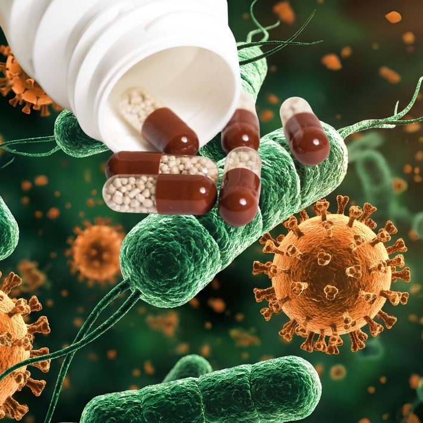

Why Antibiotic Resistance Is a Growing Problem
Antibiotic resistance happens when bacteria evolve to survive the drugs meant to kill them — often because antibiotics were used unnecessarily, or a course was stopped early once symptoms improved.
How resistance actually develops
Every time antibiotics are used, they kill the weakest bacteria first, leaving behind any that happen to be a little tougher. Stopping a course early — as soon as you start feeling better — lets those stronger, more resistant bacteria survive and multiply. Over time, and across many people doing this, the same antibiotic can become far less effective for everyone, not just the person who stopped early.
Common mistakes that speed this up
- Stopping antibiotics as soon as symptoms improve, rather than completing the full course
- Taking antibiotics for viral infections (like most colds and flu), which they don't treat at all
- Using leftover antibiotics from a previous illness for a new one, without medical advice
- Sharing prescribed antibiotics with someone else
What good antibiotic use looks like
As part of the Infection Control and Antimicrobial Stewardship team at his hospital, Dr. Joorawon's advice is simple: only take antibiotics prescribed for you, complete the full course exactly as directed even once you feel better, and never take leftover antibiotics for a new illness without medical advice. This protects not just your own future treatment options, but everyone else's too — resistant bacteria can spread between people.
Have a question about your own symptoms? Message directly and ask.
Message on WhatsAppThis article is general health information and does not replace a medical consultation. In a medical emergency, call SAMU (114) or go to your nearest hospital.